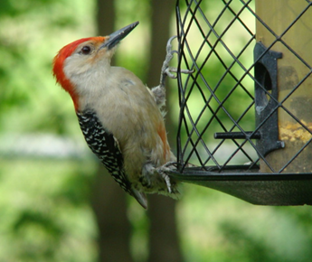

During the summer of 2010 a male red-bellied woodpecker worked diligently on a decaying limb of my big old maple tree for several days. I would hear the incessant drumming along with an occasional single “chack!” I took several photos and a short video, which I posted on You-Tube.
The red-belly will come to feeders for suet, cracked corn or sunflower seeds. The brilliant scarlet cap and “ladder back” – black horizontal stripes – whitish-gray throat and breast makes this rather small woodpecker easy to identify, as none other has this combination of colors and markings. The few reddish belly feathers have given it its name, though they are not usually seen. The female has a gray cap with red nape and a dab of red at top base of beak. When agitated, i.e. pursuing predators, the crests will be raised.
The red-belly’s diet includes berries, corn and acorns. It may store these items for the winter. In southern states, it may feast on citrus pulp. When hunting for insect larvae and carpenter ants, it scoots up and down trunks and branches of trees.
This bird is a year-round resident in Indiana. They nest in dead or decaying trees and seem to use the same tree year after year. I am saddened when the old trees are taken down. One of my neighbors has old hickories and an oak that have been half blown down by straight-line winds and one perhaps struck by lightning. I am thankful that he has not razed them. Another old, dead hickory stands beside the farm lane just beyond my property. That old relic has been a red-bellied’s nesting site for many years.
During the mating season you can hear both red-belly’s brief hoarse “churr” calls. A pair of red-bellies will defend their nesting site, but one source reports another female may steal not only the nesting site but the male as well! Three to five white eggs incubate in two weeks, and the young fledge in 25-30 days.
I have enjoyed watching and photographing red-bellied woodpeckers. I once knelt on a love-seat in front of my big front window for many minutes, my elbows steadying the camera that was focused on a red-bellied woodpecker clinging to a suet cage feeder in the flowering apple tree that was twisting in the wind. I snapped probably a couple dozen digital photos before getting one or two “keepers.” I have since invested in a tripod which now holds my camera, facing the back yard through glass patio doors, at the ready.
One big tip to amateur bird photographers (of which I am one!) – keep your camera handy both at home and in your car!
